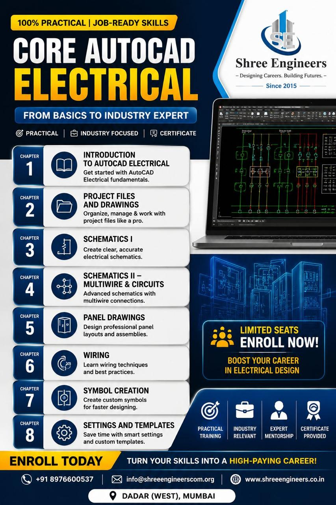

Shree Engineers
Autocad
Course

create technical drawings and designs using AutoCAD. It is widely used in civil, mechanical, electrical, architecture, and interior design industries.Institute completion certificate Autodesk Certified Professional certification (after passing the certification exam), which validates AutoCAD skills.
Create 2D and 3D designs, modify existing drawings, prepare production drawings, coordinate with engineers and clients.Manufacturing, automotive, aerospace, heavy engineering, Electrical contracting, power plants, industrial automation, MEP and Interior design firms, architecture firms, furniture companies.
Designing Solutions
Building Futures

Designing Solutions, Building Futures reflects the purpose of AutoCAD: turning ideas into accurate technical drawings that become real buildings, machines, electrical systems, and interior spaces. AutoCAD helps designers and engineers solve real-world problems through precise planning and design. AutoCAD is a Computer-Aided Design (CAD) software used to create accurate 2D drawings and 3D models.
It is widely used in architecture, civil engineering, mechanical engineering, electrical engineering, and interior design. AutoCAD to transform concepts into practical designs that support innovation, quality construction, and sustainable development.Every drawing created in AutoCAD is a step toward building.
Core Autocad
Electrical Course

The Core AutoCAD Electrical course teaches you how to create professional electrical drawings using AutoCAD and AutoCAD Electrical tools. It focuses on electrical circuits, control panels, wiring diagrams, and industrial automation documentation. An electrical schematic is a symbolic representation of an electrical circuit. It shows how electrical components are connected and how the circuit functions.
AutoCAD Electrical means using CAD software to design, draft, and document electrical systems such as electrical circuits, control panels, wiring diagrams, and power distribution systems.It includes tools, symbol libraries, and automation features that make creating electrical drawings.
Mechanical Static
Equipment
Mechanical Static Equipment refers to mechanical components that do not move during operation. These are fixed structures used in industries like oil & gas, power plants, chemical plants, and manufacturing. In AutoCAD (Mechanical or Plant Design), Mechanical Static Equipment means creating technical drawings, layouts, and 2D/3D models of fixed industrial equipment used in plants and factories.
Mechanical Static Equipment in AutoCAD means designing fixed industrial equipment like tanks, vessels, and heat exchangers using CAD software for construction, fabrication, and installation.Mechanical Static Equipment design (like tanks, pressure vessels, heat exchangers, boilers, columns, and reactors).